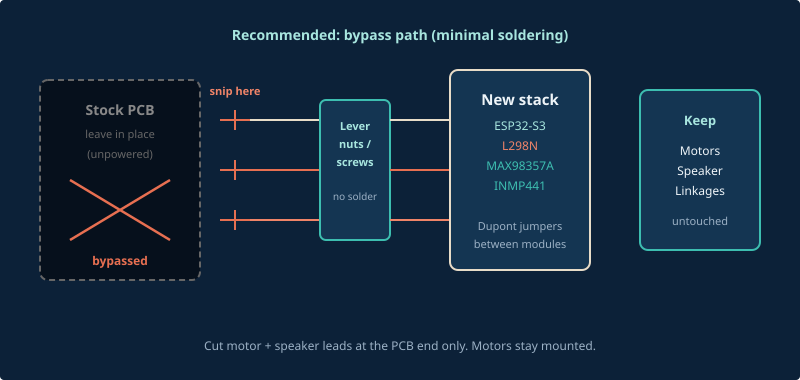
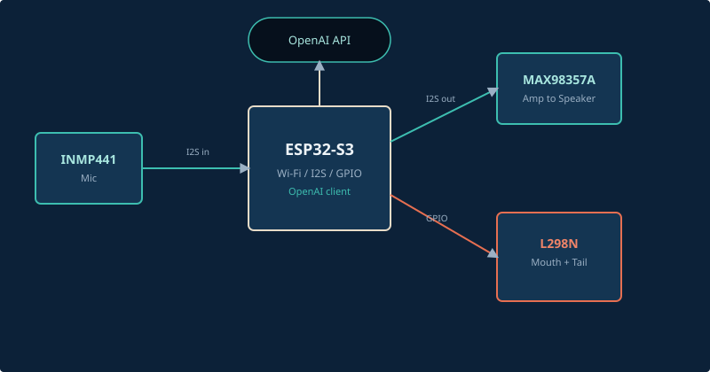
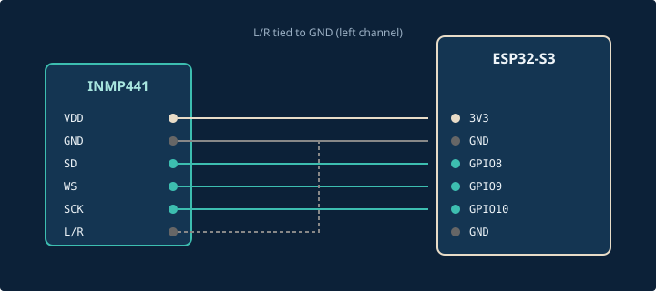
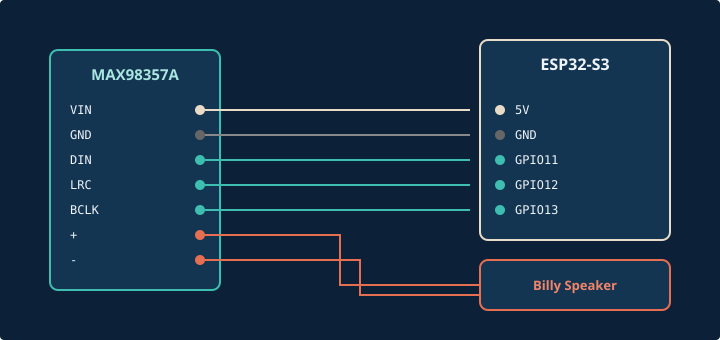
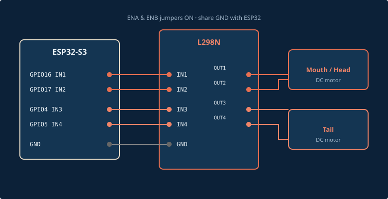

Bypass the stock MCU
Leave motors and the speaker mounted. Cut or unplug their wires at the old board, isolate the stubs, and land the fish-side leads on the L298N / amp with screw terminals or lever nuts.

System overview

INMP441 microphone
I²S RX on a dedicated bus. Tie L/R to GND so the mic always sits on the left channel.

| INMP441 | ESP32-S3 | Notes |
|---|---|---|
| VDD | 3V3 | Do not use 5 V |
| GND | GND | Common ground |
| SD (DOUT) | GPIO8 | I²S data in |
| WS (LRC) | GPIO9 | Word select |
| SCK (BCLK) | GPIO10 | Bit clock |
| L/R | GND | Left channel select |
MAX98357A amplifier
Second I²S bus for audio out to the stock Billy speaker. Keep speaker wires twisted and short.

| MAX98357A | ESP32-S3 / Speaker | Notes |
|---|---|---|
| VIN | 5V | Or shared 5 V rail |
| GND | GND | Common ground |
| DIN | GPIO11 | I²S data out |
| LRC / WS | GPIO12 | Word select |
| BCLK | GPIO13 | Bit clock |
| GAIN | float / 100k→GND | Default ~9 dB; lower if distorted |
| SD | 3V3 or float | Shutdown — keep enabled |
| + / − | Speaker terminals | Reuse Billy’s speaker |
L298N motor driver
Channel A = mouth / head motor. Channel B = tail motor. If a motor runs the wrong way, swap its two output leads — do not invert in firmware first.

| L298N | Connection | Role |
|---|---|---|
| IN1 | GPIO16 | Mouth / head direction A |
| IN2 | GPIO17 | Mouth / head direction B |
| IN3 | GPIO4 | Tail direction A |
| IN4 | GPIO5 | Tail direction B |
| ENA / ENB | 5 V (jumpers on) | Enable both channels |
| OUT1 / OUT2 | Mouth / head motor | Original Billy motor leads |
| OUT3 / OUT4 | Tail motor | Original Billy motor leads |
| 5V / GND | Logic supply + common GND | Share GND with ESP32 |
| 12V / Vin | 7–12 V motor supply or 5 V if motors tolerate it | Do not back-feed ESP32 5 V from Vin |
Power tip
If the ESP32 resets when the mouth opens, the motors are starving the 5 V rail. Power L298N Vin from a separate supply and join grounds only.
Optional talk button
| Button | ESP32-S3 | Notes |
|---|---|---|
| One leg | GPIO14 | Internal pull-up in firmware |
| Other leg | GND | Active low |
Full pin cheat sheet
| GPIO | Function |
|---|---|
| 8 | Mic SD (DOUT) |
| 9 | Mic WS |
| 10 | Mic BCLK |
| 11 | Amp DIN |
| 12 | Amp LRC |
| 13 | Amp BCLK |
| 14 | Talk button (optional) |
| 16 / 17 | Mouth motor IN1 / IN2 |
| 4 / 5 | Tail motor IN3 / IN4 |